ROBLOX

Most of the time I play ROBLOX, primarily surf, but also some other games
Surf is starting to get relatively boring due to the record I have gotten.
So i have also played Everything Upgrade Tree, 3008, Blade Ball, Demonology and FRONTLINES (basically the COD of ROBLOX).
I have a really expensive limited accessory which is the 8-Bit Royal Crown, valued at around 22K at the time of writing this.
I started playing on June 11th 2016, and have gotten many gamepasses over the years.
The total value of all gamepasses, accessories and clothing I have? A bit over 500K Robux, which is around 5K EUR.
Counter Strike 2

I usually play Arms Race on CS2. What is it? Every 2 kills you get you get a different weapon. To win, you need to get 16 weapon upgrades and get a knife kill in the end. I find this the most fun
There is also standard, which is where there are Counter-Terrorists and Terrorists. The goal of the Terrorists is to either plant a C4 and have it detonate, or to kill all the CTs. The CTs need to defuse the C4 or kill all the Terrorists.
Free For All also exists, where it's everyone against everyone, and whoever has the most kills wins.
There are also custom servers, in which some are more friendly, or more competitive. Some of these servers have entirely custom game systems, in which surf is the most well known.
Fun fact about surf, it was actually found on accident where a user found out they can glide across the ramped roofs by holding A or D relative to the side the ramp went.
Programming


I also like to do some programming along the side, i know C++, Python, Lua, JavaScript, and some other languages.
I have made my autoclicker in C++, as well as a tool to instantly screenshot the monitor the mouse is over. Useful if you need to take a really fast screenshot and don't have the time to win+shift+s.
For Python i have made a few tools, one to start my Cobalt instance, as well as a universal key overlay.
For JavaScript, there really is not much since it is the language i am worst at. The only things i really have is a websocket system that just sends the same message back.
I actually do stuff on ROBLOX using Lua, in which i have made alot of stuff, currentlly working for someone in which the goal of the game is to flex as high FPS as possible.
But i have also made a boss system for myself, a CFrame animation system as well as an animator tool for those CFrame animations.